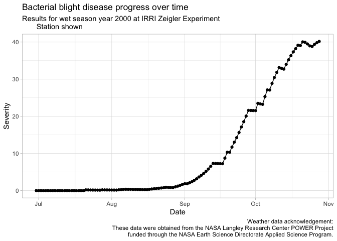

epirice: Simulation Modelling of Rice Crop Diseases Using a Susceptible-Exposed-Infectious-Removed (SEIR) Model


A fork of the R cropsim package designed to make using the EPIRICE model for rice diseases easier to use. This version provides easy to use functions to fetch weather data from NASA POWER, via the nasapower package and predict disease severity of five rice diseases using a generic SEIR model (Zadoks 1971) function, SEIR().
The original manuscript, Savary et al. (2012), which details the model and results of its use to model global epidemics of rice diseases was published in Crop Protection detailing global unmanaged disease risk of bacterial blight, brown spot, leaf blast, sheath blight and tungro, which are included in this package.
Quick start
You can easily simulate any of the five diseases for rice grown anywhere in the world from 1983 to near current given internal functionality. Alternatively, you can supply your own weather data for any time period as long as it fits the model’s requirements.
epirice is not yet on CRAN. You can install it this way.
if (!require("remotes"))
install.packages("remotes")
remotes::install_github("adamshsparks/epirice"
)Get weather data
First you need to provide weather data for the model. epirice provides the get_wth() function to do this. Using it you can fetch weather data for any place in the world from 1983 to near present by providing the longitude and latitude and dates.
library(epirice)
# Fetch weather for year 2000 wet season at the IRRI Zeigler Experiment Station
wth <- get_wth(
lonlat = c(121.25562, 14.6774),
dates = c("2000-06-30", "2000-12-31")
)
wth## YYYYMMDD DOY TM TN TX TDEW RH RAIN LAT LON
## 1: 2000-06-30 182 25.94 29.19 22.97 23.63 87.22 11.36 14.68 121.3
## 2: 2000-07-01 183 25.34 28.31 23.65 23.76 91.07 24.87 14.68 121.3
## 3: 2000-07-02 184 25.99 29.91 23.28 23.40 85.71 17.63 14.68 121.3
## 4: 2000-07-03 185 25.35 27.23 24.00 24.32 94.01 33.52 14.68 121.3
## 5: 2000-07-04 186 25.58 27.35 24.20 24.42 93.28 16.21 14.68 121.3
## ---
## 181: 2000-12-27 362 24.27 26.20 22.65 23.06 92.93 26.32 14.68 121.3
## 182: 2000-12-28 363 24.39 26.87 23.16 23.08 92.33 6.67 14.68 121.3
## 183: 2000-12-29 364 24.39 27.46 22.58 22.94 91.57 7.19 14.68 121.3
## 184: 2000-12-30 365 24.96 28.50 22.60 22.67 87.13 2.97 14.68 121.3
## 185: 2000-12-31 366 24.22 28.49 21.26 21.95 87.21 3.04 14.68 121.3Modelling bacterial blight disease severity
Once you have the weather data, run the model for any of the five rice diseases by providing the emergence or crop establishment date for transplanted rice.
bb <- predict_bacterial_blight(wth, emergence = "2000-07-01")
bb## simday dates sites latent infectious removed senesced rateinf
## 1: 0 2000-06-30 100.0 0.00 0.0 0.0 0.000 0.00
## 2: 1 2000-07-01 108.7 0.00 0.0 0.0 1.000 0.00
## 3: 2 2000-07-02 118.1 0.00 0.0 0.0 2.087 0.00
## 4: 3 2000-07-03 128.3 0.00 0.0 0.0 3.268 0.00
## 5: 4 2000-07-04 139.3 0.00 0.0 0.0 4.551 0.00
## ---
## 117: 116 2000-10-24 1454.8 27.84 901.1 296.2 2195.459 0.00
## 118: 117 2000-10-25 1463.9 27.84 901.1 296.2 2210.007 25.41
## 119: 118 2000-10-26 1405.3 25.41 887.1 338.1 2266.527 22.32
## 120: 119 2000-10-27 1354.0 47.73 848.3 376.9 2319.390 19.22
## 121: 120 2000-10-28 1309.4 66.95 812.2 413.0 2369.048 16.73
## rtransfer rgrowth rsenesced diseased severity lat lon
## 1: 0.00 9.688 1.000 0 0.00 14.68 121.3
## 2: 0.00 10.500 1.087 0 0.00 14.68 121.3
## 3: 0.00 11.374 1.181 0 0.00 14.68 121.3
## 4: 0.00 12.315 1.283 0 0.00 14.68 121.3
## 5: 0.00 13.326 1.393 0 0.00 14.68 121.3
## ---
## 117: 0.00 23.642 14.548 1225 38.97 14.68 121.3
## 118: 27.84 23.374 56.521 1225 38.82 14.68 121.3
## 119: 0.00 23.895 52.863 1251 39.37 14.68 121.3
## 120: 0.00 24.249 49.657 1273 39.82 14.68 121.3
## 121: 0.00 24.489 54.158 1292 40.17 14.68 121.3Once you have the results you can visualise them.
library(ggplot2)
ggplot(data = bb,
aes(x = dates,
y = severity)) +
labs(y = "Severity",
x = "Date") +
geom_line() +
geom_point() +
labs(title = "Bacterial blight disease progress over time",
caption = "Weather data acknowledgement:\nThese data were obtained from the NASA Langley Research Center POWER Project\nfunded through the NASA Earth Science Directorate Applied Science Program.") +
theme_light()
Meta
Please note that this project is released with a Contributor Code of Conduct. By participating in this project you agree to abide by its terms.
References
Serge Savary, Andrew Nelson, Laetitia Willocquet, Ireneo Pangga and Jorrel Aunario. Modeling and mapping potential epidemics of rice diseases globally. Crop Protection, Volume 34, 2012, Pages 6-17, ISSN 0261-2194 DOI: 10.1016/j.cropro.2011.11.009.
Jan C. Zadoks. Systems Analysis and the Dynamics of Epidemics. Laboratory of Phytopathology, Agricultural University, Wageningen, The Netherlands; Phytopathology 61:600. DOI: 10.1094/Phyto-61-600.